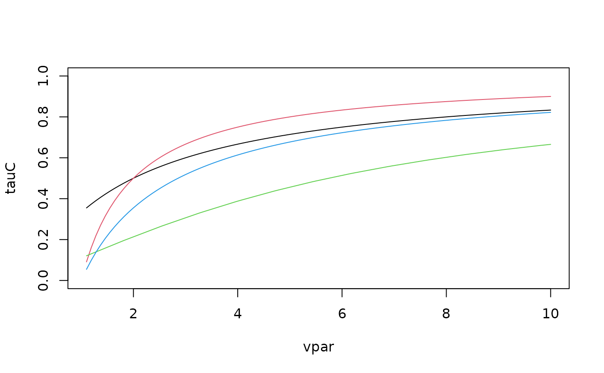

This function computes the theoretical Kendall's tau value of a bivariate copula for given parameter values.
BiCopPar2Tau(family, par, par2 = 0, obj = NULL, check.pars = TRUE)
| family | integer; single number or vector of size |
|---|---|
| par | numeric; single number or vector of size |
| par2 | numeric; single number or vector of size |
| obj |
|
| check.pars | logical; default is |
Theoretical value of Kendall's tau (vector) corresponding to the
bivariate copula family and parameter vector \((\theta, \delta) =\)
(par, par2).
No. (family) | Kendall's tau (tau) |
1, 2 | \(\frac{2}{\pi}\arcsin(\theta)\) |
3, 13 | \(\frac{\theta}{\theta+2}\) |
4, 14 | \(1-\frac{1}{\theta}\) |
5 | \(1-\frac{4}{\theta}+4\frac{D_1(\theta)}{\theta}\) |
| with \(D_1(\theta)=\int_0^\theta \frac{x/\theta}{\exp(x)-1}dx\) (Debye function) | |
6, 16 | \(1+\frac{4}{\theta^2}\int_0^1 x\log(x)(1-x)^{2(1-\theta)/\theta}dx\) |
7, 17 | \(1-\frac{2}{\delta(\theta+2)}\) |
8, 18 | \(1+4\int_0^1 -\log(-(1-t)^\theta+1) (1-t-(1-t)^{-\theta}+(1-t)^{-\theta}t)/(\delta\theta) dt\) |
9, 19 | \(1+4\int_0^1 ( (1-(1-t)^{\theta})^{-\delta} - 1) /( -\theta\delta(1-t)^{\theta-1}(1-(1-t)^{\theta})^{-\delta-1} ) dt\) |
10, 20 | \(1+4\int_0^1 -\log \left(((1-t\delta)^\theta-1)/((1-\delta)^\theta-1) \right) \) |
| \(* (1-t\delta-(1-t\delta)^{-\theta}+(1-t\delta)^{-\theta}t\delta)/(\theta\delta) dt\) | |
23, 33 | \(\frac{\theta}{2-\theta}\) |
24, 34 | \(-1-\frac{1}{\theta}\) |
26, 36 | \(-1-\frac{4}{\theta^2}\int_0^1 x\log(x)(1-x)^{-2(1+\theta)/\theta}dx\) |
27, 37 | \(-1-\frac{2}{\delta(2-\theta)}\) |
28, 38 | \(-1-4\int_0^1 -\log(-(1-t)^{-\theta}+1) (1-t-(1-t)^{\theta}+(1-t)^{\theta}t)/(\delta\theta) dt\) |
29, 39 | \(-1-4\int_0^1 ( (1-(1-t)^{-\theta})^{\delta} - 1) /( -\theta\delta(1-t)^{-\theta-1}(1-(1-t)^{-\theta})^{\delta-1} ) dt\) |
30, 40 | \(-1-4\int_0^1 -\log \left( ((1+t\delta)^{-\theta}-1)/((1+\delta)^{-\theta}-1) \right)\) |
| \(* (1+t\delta-(1+t\delta)^{\theta}-(1+t\delta)^{\theta}t\delta)/(\theta\delta) dt\) | |
104,114 | \(\int_0^1 \frac{t(1-t)A^{\prime\prime}(t)}{A(t)}dt\) |
| with \(A(t) = (1-\delta)t+[(\delta(1-t))^{\theta}+t^{\theta}]^{1/\theta}\) | |
204,214 | \(\int_0^1 \frac{t(1-t)A^{\prime\prime}(t)}{A(t)}dt\) |
| with \(A(t) = (1-\delta)(1-t)+[(1-t)^{-\theta}+(\delta t)^{-\theta}]^{-1/\theta}\) | |
124,134 | \(-\int_0^1 \frac{t(1-t)A^{\prime\prime}(t)}{A(t)}dt\) |
| with \(A(t) = (1-\delta)t+[(\delta(1-t))^{-\theta}+t^{-\theta}]^{-1/\theta}\) | |
224,234 | \(-\int_0^1 \frac{t(1-t)A^{\prime\prime}(t)}{A(t)}dt\) |
| with \(A(t) = (1-\delta)(1-t)+[(1-t)^{-\theta}+(\delta t)^{-\theta}]^{-1/\theta}\) |
If the family and parameter specification is stored in a BiCop()
object obj, the alternative version
BiCopPar2Tau(obj)
can be used.
The number n can be chosen arbitrarily, but must agree across
arguments.
Joe, H. (1997). Multivariate Models and Dependence Concepts. Chapman and Hall, London.
Czado, C., U. Schepsmeier, and A. Min (2012). Maximum likelihood estimation of mixed C-vines with application to exchange rates. Statistical Modelling, 12(3), 229-255.
## Example 1: Gaussian copula tau0 <- 0.5 rho <- BiCopTau2Par(family = 1, tau = tau0) # transform back tau <- BiCopPar2Tau(family = 1, par = rho) tau - 2/pi*asin(rho)#> [1] 0## Example 2: vpar <- seq(from = 1.1, to = 10, length.out = 100) tauC <- BiCopPar2Tau(family = 3, par = vpar) tauG <- BiCopPar2Tau(family = 4, par = vpar) tauF <- BiCopPar2Tau(family = 5, par = vpar) tauJ <- BiCopPar2Tau(family = 6, par = vpar) plot(tauC ~ vpar, type = "l", ylim = c(0,1))## Example 3: different copula families theta <- BiCopTau2Par(family = c(3,4,6), tau = c(0.4, 0.5, 0.6)) BiCopPar2Tau(family = c(3,4,6), par = theta)#> [1] 0.4 0.5 0.6# \dontshow{ # Test BiCopPar2Tau (one parametric families) theta <- BiCopTau2Par(family = 0, tau = c(0.4,0.5,0.6)) BiCopPar2Tau(family = 0, par = theta)#> [1] 0 0 0#> [1] 0.4 0.5 0.6#> [1] 0.4 0.5 0.6#> [1] 0.4 0.5 0.6#> [1] 0.4 0.5 0.6#> [1] 0.4 0.5 0.6#> [1] 0.4 0.5 0.6#> [1] 0.4 0.5 0.6#> [1] 0.4 0.5 0.6#> [1] -0.4 -0.5 -0.6#> [1] -0.4 -0.5 -0.6#> [1] -0.4 -0.5 -0.6#> [1] -0.4 -0.5 -0.6#> [1] -0.4 -0.5 -0.6#> [1] -0.4 -0.5 -0.6#> [1] 0.4 0.5 0.6#> [1] 0.4 0.5 0.6#> [1] 0.4 0.5 0.6#> [1] 0.4 0.5 0.6#> [1] -0.4 -0.5 -0.6#> [1] -0.4 -0.5 -0.6#> [1] -0.4 -0.5 -0.6#> [1] -0.4 -0.5 -0.6# Test BiCopPar2Tau (two parametric families) theta <- BiCopTau2Par(family = 2, tau = c(0.4,0.5,0.6)) BiCopPar2Tau(family = 2, par = theta)#> [1] 0.4 0.5 0.6theta <- 1:3 delta <- 1:3 BiCopPar2Tau(family = 7, par = theta, par2 = delta)#> [1] 0.3333333 0.7500000 0.8666667BiCopPar2Tau(family = 17, par = theta, par2 = delta)#> [1] 0.3333333 0.7500000 0.8666667theta <- -(1:3) delta <- -(1:3) BiCopPar2Tau(family = 27, par = theta, par2 = delta)#> [1] -0.3333333 -0.7500000 -0.8666667BiCopPar2Tau(family = 37, par = theta, par2 = delta)#> [1] -0.3333333 -0.7500000 -0.8666667theta <- 2:4 delta <- 1:3 BiCopPar2Tau(family = 8, par = theta, par2 = delta)#> [1] 0.3550658 0.7589812 0.8712351BiCopPar2Tau(family = 18, par = theta, par2 = delta)#> [1] 0.3550658 0.7589812 0.8712351theta <- -(2:4) delta <- -(1:3) BiCopPar2Tau(family = 28, par = theta, par2 = delta)#> [1] -0.3550658 -0.7589812 -0.8712351BiCopPar2Tau(family = 38, par = theta, par2 = delta)#> [1] -0.3550658 -0.7589812 -0.8712351theta <- 1:3 delta <- 1:3 BiCopPar2Tau(family = 9, par = theta, par2 = delta)#> [1] 0.3333333 0.5833333 0.6848485BiCopPar2Tau(family = 19, par = theta, par2 = delta)#> [1] 0.3333333 0.5833333 0.6848485theta <- -(1:3) delta <- -(1:3) BiCopPar2Tau(family = 29, par = theta, par2 = delta)#> [1] -0.3333333 -0.5833333 -0.6848485BiCopPar2Tau(family = 39, par = theta, par2 = delta)#> [1] -0.3333333 -0.5833333 -0.6848485#> [1] 0.01200125 0.16649954 0.53531633BiCopPar2Tau(family = 20, par = theta, par2 = delta)#> [1] 0.01200125 0.16649954 0.53531633#> [1] -0.01200125 -0.16649954 -0.53531633BiCopPar2Tau(family = 40, par = theta, par2 = delta)#> [1] -0.01200125 -0.16649954 -0.53531633#> [1] 0.08268413 0.38629436 0.68897031BiCopPar2Tau(family = 114, par = theta, par2 = delta)#> [1] 0.08268413 0.38629436 0.68897031#> [1] -0.08268413 -0.38629436 -0.68897031BiCopPar2Tau(family = 134, par = theta, par2 = delta)#> [1] -0.08268413 -0.38629436 -0.68897031#> [1] 0.08268413 0.38629436 0.68897031BiCopPar2Tau(family = 214, par = theta, par2 = delta)#> [1] 0.08268413 0.38629436 0.68897031#> [1] -0.08268413 -0.38629436 -0.68897031BiCopPar2Tau(family = 234, par = theta, par2 = delta)#> [1] -0.08268413 -0.38629436 -0.68897031# }